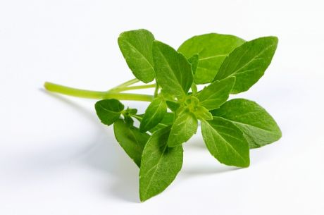

INÍCIO
Texto falando sobre o site bla bla bla bla

FLORES
Tulipas
Para plantar e cuidar de tulipas, é essencial seguir algumas etapas importantes. Primeiramente, escolha um local com solo bem drenado e exposição ao sol direto ou parcial. Plante os bulbos no outono, com cerca de 10-15 centímetros de profundidade e espaçados por aproximadamente 10 centímetros. Certifique-se de que o solo esteja bem preparado, misturando composto orgânico para garantir boa fertilidade. Durante o crescimento, mantenha o solo úmido, mas não encharcado, especialmente durante períodos de crescimento ativo. Após o florescimento, remova as flores murchas para promover a energia da planta para o próximo ciclo de crescimento. No verão, quando as folhas secarem, você pode cortá-las e armazenar os bulbos em local fresco e seco até o próximo outono, quando deverão ser replantados.

Rosa
Para plantar e cuidar de rosas, é fundamental escolher um local bem iluminado, com pelo menos seis horas de sol direto por dia. Prepare o solo adicionando composto orgânico para melhorar a fertilidade e a drenagem. Cave um buraco grande o suficiente para acomodar as raízes da rosa e plante-a de modo que o enxerto (a área onde o caule se junta às raízes) fique cerca de 2-3 centímetros abaixo da superfície do solo. Regue abundantemente após o plantio e mantenha o solo úmido durante os primeiros meses para ajudar no estabelecimento das raízes. Para cuidar das rosas, mantenha o solo levemente úmido durante a estação de crescimento, evitando molhar as folhas para prevenir doenças. Fertilize a cada primavera com adubo balanceado para promover um crescimento saudável e uma floração exuberante. Remova flores murchas regularmente para incentivar novas florações.

Girassol
Para plantar e cuidar de girassóis, escolha um local ensolarado com solo bem drenado. Plante as sementes diretamente no solo após o último risco de geada, em uma profundidade de cerca de 2-3 centímetros e espaçadas entre 30 a 60 centímetros, dependendo da variedade. Mantenha o solo úmido durante a fase inicial de crescimento, regando regularmente, mas evitando encharcar. Após o florescimento, mantenha a rega para prolongar a vida útil da flor. Quando as cabeças das sementes amadurecerem, proteja-as de pássaros cobrindo com uma rede. Girassóis são plantas resistentes que requerem pouca manutenção além de cuidados básicos de água e nutrientes, e proporcionam uma bela adição ao jardim com suas grandes flores amarelas que seguem o movimento do sol ao longo do dia.

Orquídeas
Escolha um vaso com drenagem adequada e um substrato específico para orquídeas, como casca de pinheiro ou musgo sphagnum. Certifique-se de que as raízes estejam bem posicionadas no vaso, com espaço suficiente para respirar. As orquídeas preferem luz indireta e podem prosperar em locais com luz filtrada ou sombra parcial. Regue com moderação, permitindo que o substrato seque entre as regas para evitar o apodrecimento das raízes. Fertilize com um adubo específico para orquídeas, diluído e aplicado com cuidado durante os períodos de crescimento ativo. Mantenha um ambiente com boa circulação de ar para evitar o acúmulo de umidade ao redor das folhas e flores.

TÉCNICAS DE PLANTAÇÃO
Tomate
Plante as mudas ou sementes após o risco de geada ter passado, em covas espaçadas de 45 a 60 centímetros e profundas o suficiente para cobrir parcialmente o caule. Regue regularmente, mantendo o solo úmido, mas não encharcado. Utilize estacas ou gaiolas para suporte das plantas à medida que crescem, facilitando o acesso à luz e evitando que os frutos toquem o solo. Fertilize com um adubo balanceado rico em nitrogênio, fósforo e potássio para promover um crescimento saudável e uma boa produção de frutos. Remova as folhas inferiores conforme a planta cresce para melhor circulação de ar e prevenção de doenças. Mantenha o jardim livre de ervas daninhas e pragas, inspecionando regularmente as plantas.

Manjericão
Escolha um local ensolarado com solo bem drenado e rico em matéria orgânica. Plante as mudas ou sementes após a última geada, espaçando-as cerca de 20-30 centímetros de distância. Mantenha o solo levemente úmido, regando regularmente, mas evite encharcar. Manjericão beneficia-se de uma fertilização leve com adubo orgânico durante o crescimento. Para promover um crescimento exuberante, pode-se pinçar as pontas das hastes para incentivar o crescimento lateral e uma planta mais cheia. Remova regularmente as flores para direcionar a energia da planta para as folhas, que são as partes mais utilizadas culinariamente. Proteja as plantas de geadas tardias e de temperaturas extremas.
Alface
Escolha um local com solo bem drenado e rico em matéria orgânica. Plante as sementes ou mudas em fileiras espaçadas cerca de 25-30 centímetros, em um local que receba sol direto ou sombra parcial. Mantenha o solo uniformemente úmido, regando regularmente para evitar que a terra seque completamente. Fertilize a cada duas semanas com um adubo balanceado para promover um crescimento saudável das folhas. Ao crescer, monitore a planta para remover ervas daninhas e evitar pragas. Se necessário, use coberturas de linha para proteger contra insetos. Colha as folhas externas à medida que crescem para incentivar a produção contínua e evitar que a planta floresça, o que pode resultar em sabor amargo.

Cenoura
Escolha um local ensolarado com solo leve, solto e bem drenado. Prepare o solo removendo pedras e quebrando torrões para facilitar o crescimento das raízes. Plante as sementes diretamente no solo, espaçadas cerca de 5-7 centímetros e com uma profundidade de 1-2 centímetros. Mantenha o solo levemente úmido durante todo o período de crescimento, regando regularmente para evitar que a terra seque completamente. Uma cobertura de palha pode ajudar a manter a umidade e proteger as raízes das cenouras. Fertilize com um adubo balanceado durante o crescimento para promover raízes saudáveis e um bom desenvolvimento das cenouras.Colha as cenouras quando estiverem maduras, normalmente entre 60 a 80 dias após o plantio, puxando suavemente as raízes para fora do solo.